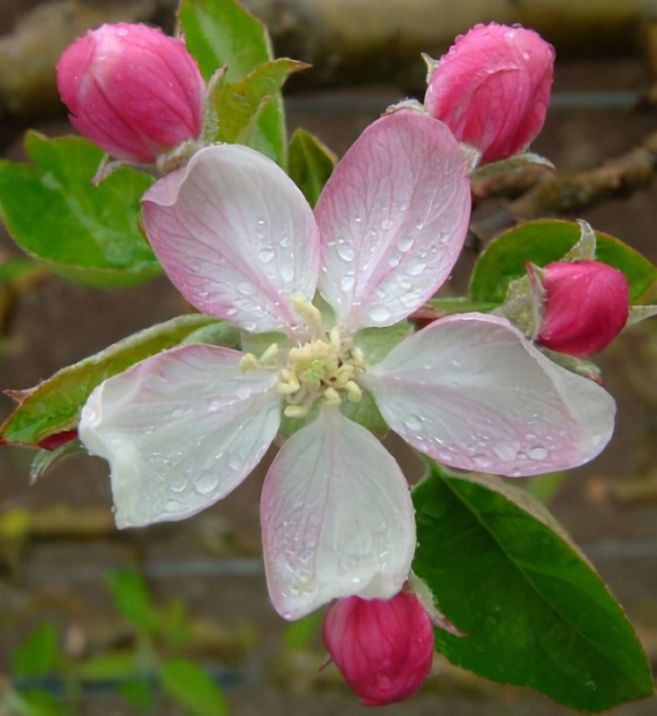
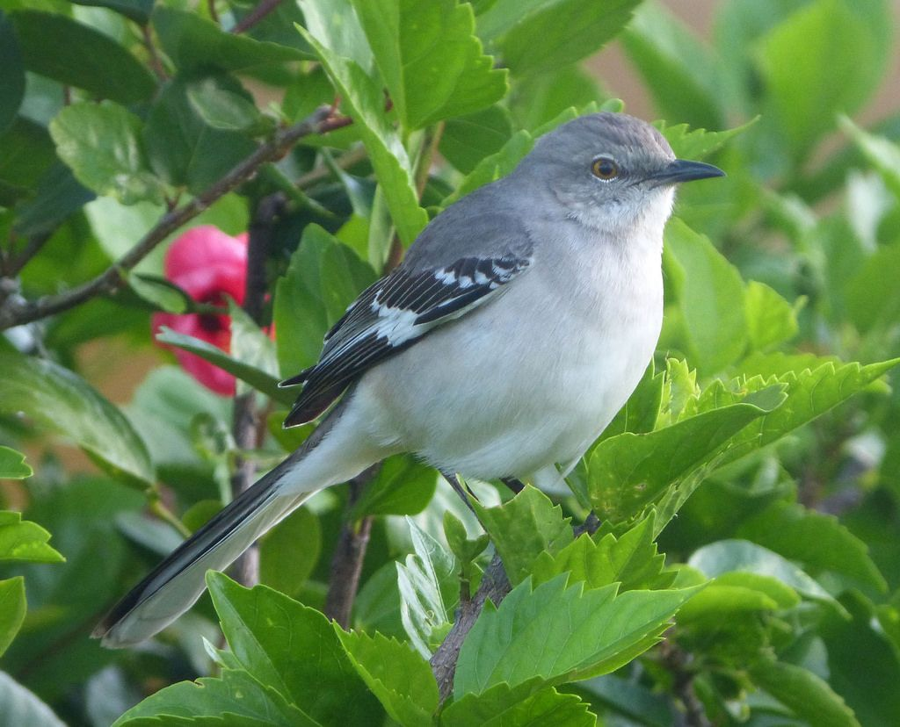
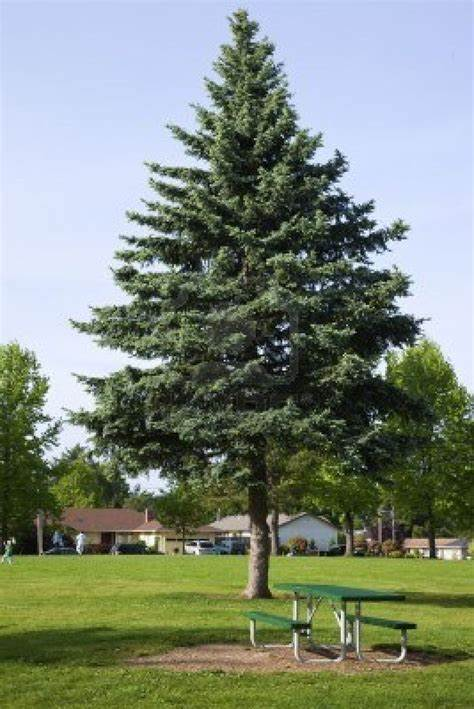

Part of the land acquired in the Louisiana Purchase, Arkansas became a separate territory in 1819 and achieved statehood in 1836. A slave state, Arkansas became the ninth state to secede from the union and join the Confederate States of America. Today Arkansas ranks 27th among the 50 states in the area, but, except for Louisiana and Hawaii, it is the smallest state west of the Mississippi River. Its neighbors are Missouri to the north, Tennessee and Mississippi to the east, Louisiana to the south, Texas to the southwest and Oklahoma to the west. The name Arkansas was used by the early French explorers to refer to the Quapaw people—a prominent indigenous group in the area—and to the river along which they settled. The term was likely a corruption of akansea, the word applied to the Quapaw by another local indigenous community, the Illinois. Little Rock, the state capital, is located in the central part of the state. In 1957, Little Rock Central High School became the focus of national attention when federal troops were deployed to the campus to enforce integration.
| Date of Statehood | Capital | Population | Size |
|---|---|---|---|
| June 15, 1836 | Little Rock | 3.01 million | 53,179 square miles |
Regnat populous (“The people rule”)
Apple Blossom
Mockingbird
Pine
Interesting facts